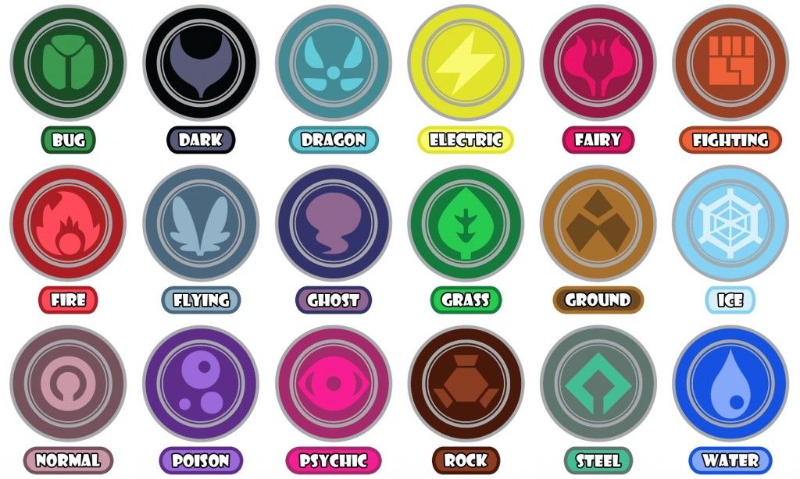
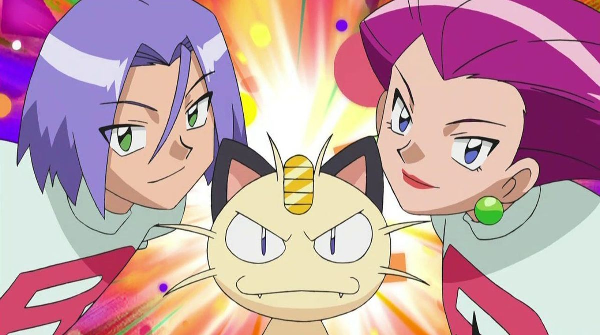
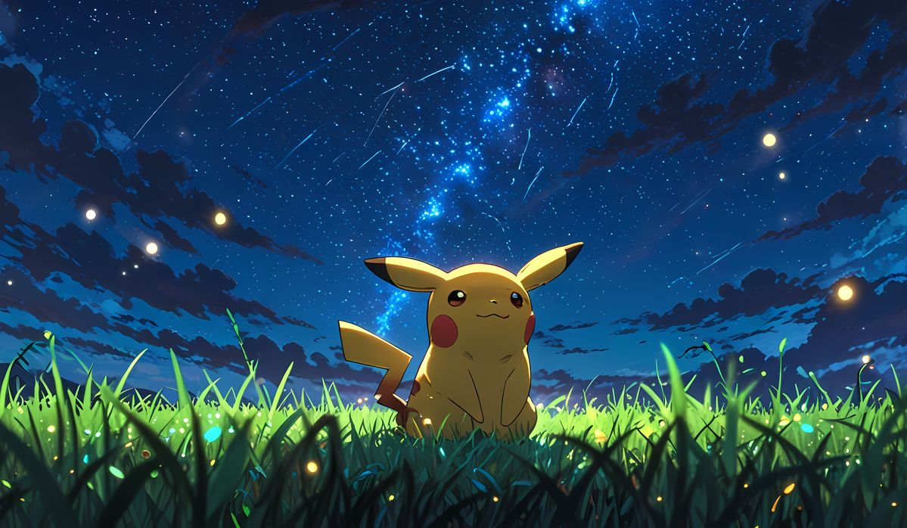

Los tipos o tipos elementales (Types en inglés, タイプ en japonés) son atributos asociados a los
Pokémon y a los movimientos desarrollados por estos, que permiten su clasificación y crean relaciones
entre ellos basadas en las ventajas y debilidades de los tipos.
[Pokémon Wiki, s. f.]

Algunos Pokémon pueden pertenecer a dos tipos a la vez, mientras que los movimientos solo a uno. Por
otra parte, existen ciertos factores que hacen que algunos Pokémon cambien de tipo. La mayoría de los
tipos elementales fueron introducidos en la primera generación. Los tipos acero y siniestro fueron
añadidos en la segunda generación, así como el tipo "???" al cual no pertenece ningún Pokémon, solo
huevos Pokémon, el movimiento maldición (hasta la cuarta generación), y en Mundo Misterioso, los
movimientos sablazo y cortaviento. El tipo hada se añadió en la sexta generación.
PIKACHU DE ASH
Pikachu es el Pokémon inicial de Ash. Lo obtuvo de manos del profesor Oak, en Pueblo Paleta. Aunque al
principio Pikachu no le obedecía, tras una serie de acontecimientos se convirtió en su mejor amigo y ha
aparecido junto a él en todos los episodios regulares desde el primero, incluyendo todas las películas.
Su voz a nivel global lo hace Ikue Ōtani (大谷育江 Ōtani Ikue)
Pikachu fue entregado a Ash en el primer episodio del anime, ¡Pokémon, te elijo a ti! (ES) / ¡Pokémon,
yo te elijo! (HA), por el profesor Oak después de haber llegado tarde y de que los tres Pokémon
iniciales ya habían sido elegidos por otros entrenadores. Al principio a Pikachu no le agradaba su nuevo
entrenador, pues se burlaba de él al no tener habilidades como entrenador Pokémon y lo electrocutaba
con frecuencia. Pero después de que Ash se sacrificara por salvar a Pikachu de una bandada de Spearow
que comenzaron a atacarlos, Pikachu comprendió el verdadero cariño que su entrenador sentía por él y se
lanzó hacia los Spearow para derrotarlos con un poderoso impactrueno.
[Pokémon Wiki, s. f.]
El Team/Equipo Rocket ha estado detrás de Pikachu desde que le vieron por primera vez en Emergencia
Pokémon (ES), (HA) ‹№› al ver lo poderoso que era por destruir el Centro Pokémon con sus poderes
eléctricos.

PERSONALIDAD Y CARACTERÍSTICAS
A lo largo de la serie se ha podido notar que este Pokémon es muy cariñoso con todos los amigos de Ash
y con éste mismo, como se demuestra en Las flores acuáticas de Ciudad Celeste (ES), (HA) cuando se
negó a combatir en el Gimnasio Pokémon de Ciudad Celeste por no luchar contra Misty (dado que se
llevaba bien con ella), pero le incomodan las personas con malos fines e inescrupulosas como el
Team/Equipo Rocket. Es también muy responsable y sensato ya que siempre cuidaba del Togepi de Misty o
del resto de sus compañeros Pokémon.
[Pokémon Wiki, s. f.]

Existe un gran vínculo de amistad entre Ash y Pikachu, ésta es tan fuerte que en algunas ocasiones
cuando le pasa algo a Pikachu, Ash hace hasta lo imposible para recuperar a su compañero y mejor amigo.
También, cuando Pikachu es controlado y ataca a Ash, el cuando vuelve a la normalidad, se preocupa, y
entristece, preocupandose de que no le haya hecho nada a Ash. Varias veces este lazo de amistad ha
puesto celosos a otros Pokémon de Ash como Bayleef, Aipom y Oshawott.
En diferentes ocasiones se ha demostrado que Pikachu tiene talento para imitar a otros Pokémon e
incluso personas al estirarse la cara. Normalmente usa este método para comunicarse con los humanos.
Otro dato interesante es que el Pikachu de Ash repartido por evento es de naturaleza pícara, pero en
el anime no lo parece (excepto en el primer episodio, por supuesto). En los episodios Enfrentamiento
en Ciudad Tenebrosa (ES) / Duelo en Ciudad Oscura (HA) y ¡Megarrevelaciones! (ES) / ¡Mega
revelaciones! (HA) ‹№› (entre otros), durante pequeños momentos, se puede ver que el condimento
preferido de Pikachu es el ketchup.
A lo largo de la historia, Pikachu se ha negado a evolucionar en Raichu en dos ocasiones. En el
episodio donde pelea con el Raichu de Lt. Surge. La enfermera Joy le regala a Ash una piedra trueno.
Más tarde, en ¡Pika contra Goliath! (ES) / Pika y Goliath (HA) ‹№›, donde Pikachu vuelve a perder
contra otro Raichu, se ve que Ash aún conservaba la piedra trueno que obtuvo en Ciudad Carmín. Al
final, es el Team/Equipo Rocket quien roba la piedra trueno para asegurarse que nunca evolucione, y
así puedan seguir siempre detrás de él.
Pikachu se ha caracterizado como un Pokémon diferente de los demás en varias ocasiones, ya que, a
pesar de que su especie no es muy fuerte, Pikachu ha sido capaz de derrotar a Pokémon tanto con
ventaja de tipo, como el tipo tierra, y tamaño, como los Pokémon legendarios, como Regice y Latios o
la megaevolución, como Mega-Lucario. Sin embargo también ha sido víctima del arrollador poder de
algunos Pokémon cuando es fácilmente superado por algunos contra los cuales tiene una clara ventaja,
como el Panpour de Cress/Maíz, el Snivy de Trip (aunque Pikachu en ese momento no contaba con poderes
eléctricos por culpa de Zekrom) o recientemente el Surskit de Viola/Violeta.
Pikachu ha participado en numerosas batallas de gimnasio, ayudando a Ash a conseguir muchas medallas
y participado en todas las Ligas Pokémon hasta ahora. También ha participado en Concursos Pokémon,
dando una buena presentación en todas las ocasiones y también participó en la Batalla de la
Frontera/Frente Batalla.[Pokémon Wiki, s. f.]